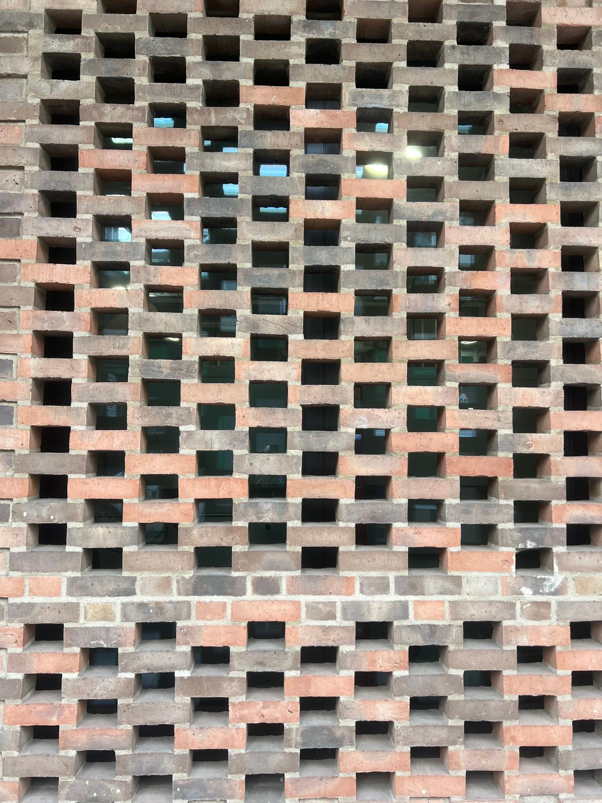
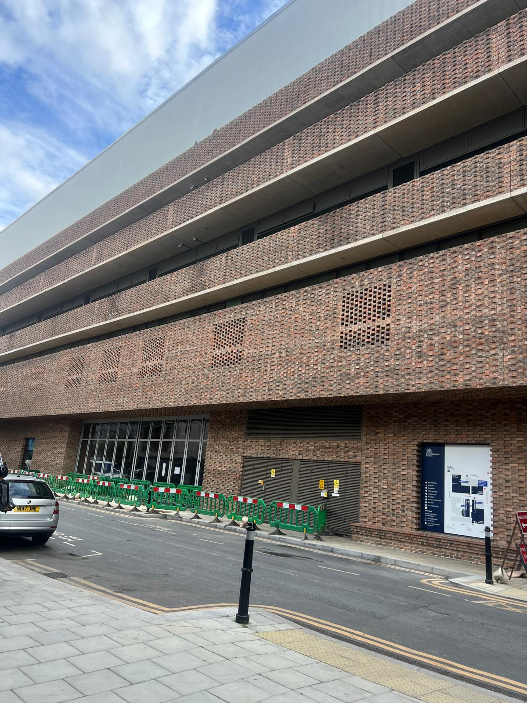
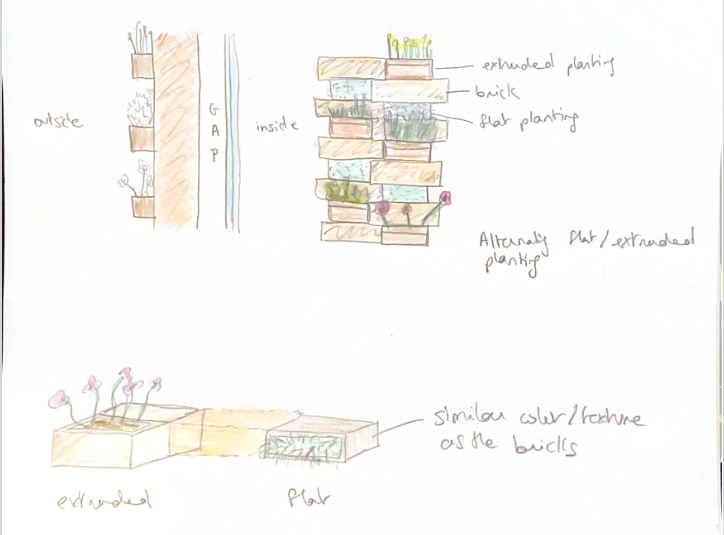
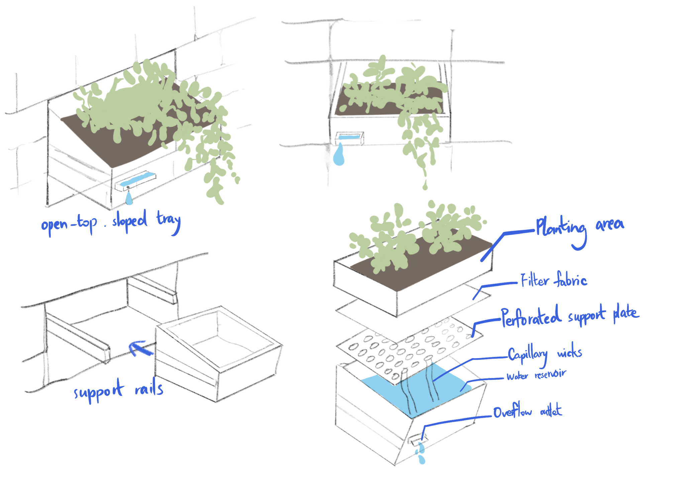
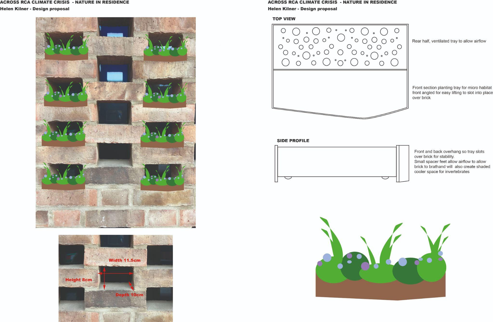

Existing function
Pending: Confirmation from Estates of the selected opening’s purpose and any restrictions.

Exploring how gaps in RCA Battersea’s brickwork could make room for micro-gardens and insect habitats.
A design study by Climate Crisis Group 2 at the Royal College of Art, Battersea.

On our campus walk, we noticed stretches of brickwork with little greenery or visible space for small habitats. Looking closer, we found repeated openings in the red-brick façade.
Could these openings hold micro-gardens or insect habitat modules?
We moved from the whole façade to a single opening. Its size sets the starting envelope, while its existing function determines whether it can be used at all.
Trial location pending. A marks a visible screen panel. B marks the brick edge beside the campus sign as a street-level landmark. Exact trial bay and opening pending. A marked-up site photo is needed to link the proposed trial area to C.
Pending: Confirmation from Estates of the selected opening’s purpose and any restrictions.
Sun hours, wind-driven rain and runoff at the exact trial opening are pending. Compare them with the planting and drainage needs before choosing a module.
The campus walk documented openings and stretches with little greenery. A campus species list is pending.
Space for the park name, recorded species, observation dates and source.
The photos document empty mock-ups in the brick screen. Plant establishment and animal occupancy records are pending.
The group began looking for local plants suited to shallow soil.
The group is exploring small insect habitats. Target species are pending.
The sketches show how a module might meet the brickwork. The prototype photos document an early fit check.
Space for the group’s reference projects, images and the design decisions each case informed.

Two profiles test how much planting would extend beyond the brick face.

A sloped tray combines shallow planting with a water reservoir and overflow.

The plan separates a planted front from a perforated rear.
We tried simple tray and cardboard forms in the existing brick screen to see how they sat in the openings.
Recorded opening dimensions range from 11–12.5 cm wide, 8–9 cm high and 10–10.2 cm deep. Photos show that mock-ups could be placed in individual openings. A written fit assessment and further test results are pending.
Space for the group’s test notes and a before-and-after comparison. A site trial is proposed.
Estates response pending. The slides record questions for Estates. A confirmed reply, agreed trial location and installation conditions are pending.
Next chapterThe wall study proposes a repeatable arrangement of planted inserts. The two physical mock-ups show an initial fit check at the scale of one opening.
A shows how a single insert might repeat across the façade. B1 and B2 show the single-opening fit studies. A planted or occupied module and a longer-term installation are still proposed.
The tray sketch shows an open planting bed. Plant selection and soil depth are pending. Planting ↑
The exploded sketch shows wicks, a water reservoir and an overflow outlet. Water performance records are pending.
The side-profile notes propose a cooler space for invertebrates beneath the tray. Species-specific habitat details and use records are pending. Target Species ↑
A shallow front tray holds the growing medium. Check actual root depth and saturated weight.
The brick-seated study proposes a shaded space beneath the tray. Species-specific habitat details are pending.
The rail study carries the tray at the sides. The brick-seated study shows front and rear lips and spacer feet over the lower brick.
The rail study shows a filter, perforated plate, wicks, reservoir and overflow. Verify where the overflow lands.
Use the Battersea study as a worked example. Confirm the site conditions with the building manager before installing any module.
Check what the gap does. At Battersea, the purpose of the selected opening is pending.
Record width, height and depth, then log sun and rain. Use the measured Battersea opening as a starting point.
Match plants to soil depth and exposure. Check which insects could use the food or shelter provided.
Compare a rail-supported tray with one seated over the brick. Check removal access.
Ask the site manager to confirm the proposed location, any restrictions and the permitted support method.
Assign someone to check stability, drainage, plant health and any occupied habitat.